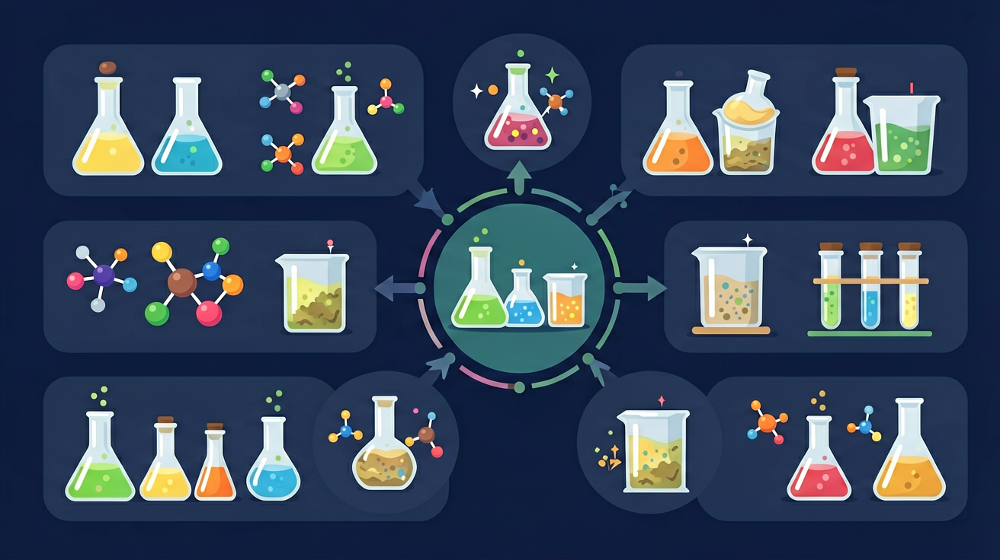

真实情境
小区铁门防锈处理
物业师傅正在给小区铁门刷防锈漆，他先用砂纸打磨掉铁门表面的锈斑，再均匀涂刷底漆和面漆。旁边新安装的不锈钢栏杆则直接暴露在空气中。王同学发现铁门每隔2-3年就要重新刷漆，而不锈钢栏杆始终光亮。
已有经验
知道铁在潮湿空气中易生锈，见过金属表面刷漆处理
真正卡点
混淆物理隔离（刷漆）与电化学保护（牺牲阳极）的原理差异
本课任务
分析不同防锈措施的工作原理
防腐不是让金属永远不反应，而是怎样让氧化反应变慢、转移或被阻断？

先选一个你关心的问题。后面的例子、提示和 AI 学伴都会围绕这个问题来帮你推进。
选择或输入后，本课会围绕你的问题展开。
物业师傅正在给小区铁门刷防锈漆，他先用砂纸打磨掉铁门表面的锈斑，再均匀涂刷底漆和面漆。旁边新安装的不锈钢栏杆则直接暴露在空气中。王同学发现铁门每隔2-3年就要重新刷漆，而不锈钢栏杆始终光亮。
知道铁在潮湿空气中易生锈，见过金属表面刷漆处理
混淆物理隔离（刷漆）与电化学保护（牺牲阳极）的原理差异
分析不同防锈措施的工作原理
钢铁在潮湿空气中形成微原电池，铁作负极被氧化，发生吸氧腐蚀（中性/弱酸环境更常见）。析氢腐蚀发生在酸性较强环境。腐蚀是自发的氧化还原过程。分析先判断是否构成原电池及谁作负极。
钢铁在潮湿空气中最常见的腐蚀类型是？
把更活泼的金属与被保护金属相连，活泼金属作负极优先被腐蚀，被保护金属作正极受保护。如轮船外壳装锌块、地下管道接镁块。关键在于让被保护金属成为原电池的正极。
牺牲阳极保护法中被优先腐蚀的是？
外加电流阴极保护：把被保护金属接电源负极作阴极，使其不被氧化。覆盖层防护：涂漆、镀层、钝化膜隔绝金属与环境。合金化也能提高耐蚀性。选择方法要结合环境和成本。
外加电流阴极保护法使被保护金属作？
本课任务：用电路理解牺牲阳极与外加电流保护的电子流向，画出钢铁吸氧腐蚀与两种防护方案的对照图。
写清自变量、因变量和至少两个保持不变的条件，避免同时改变多个因素后无法归因。
至少记录三组带单位的数据或三个可复查的现象，不用“变大了”“更明显”代替证据。
用本课公式、粒子模型或受力关系解释趋势，并指出结论成立所依赖的模型条件。
换一个参数或真实情境预测结果，再用仿真检验；若不一致，回查变量、单位和边界条件。
牺牲阳极法中，被牺牲的金属通常应当？
涂层、油漆、镀层通过隔绝水和氧降低腐蚀条件。
连接更活泼金属，使其先被氧化，从而保护被保护金属。
让被保护金属保持阴极状态，减少其失电子氧化。
金属腐蚀主要是化学腐蚀与电化学腐蚀。钢铁在潮湿空气中形成原电池，负极 Fe 被氧化，正极 O₂ 或 H⁺ 得电子，分吸氧腐蚀与析氢腐蚀。防护：改换材料、隔离保护（涂层）、电化学保护（牺牲阳极、外加电流）等。
潮湿中性/弱酸环境多为吸氧腐蚀；酸性较强可能析氢。防护要对因：隔绝空气水分、牺牲更活泼金属、外加电流使被保护金属作阴极。
常见误区：常见误区是认为镀层破损后防护效果都一样。镀锌与镀锡破损后电化学行为不同。
钢铁在潮湿空气中主要发生？
记忆锚点：防腐三路：隔水氧、牺牲更活泼金属、外加电流当阴极。
易错提醒：常见错误：认为涂层破损后仍然完全保护。破损处会形成局部腐蚀，需要维护或配合阴极保护。
理解金属腐蚀的电化学原理，掌握牺牲阳极法和外加电流法等防护技术，探究不同环境下的最佳防腐方案
青岛海湾大桥采用铝合金牺牲阳极保护钢桩，每块阳极重23kg，可保护相邻3根钢桩8年以上，电位差维持在-0.85V至-1.10V
分析防腐方案三步法：1.判断腐蚀环境（潮湿/酸性）2.确定主导腐蚀类型（吸氧/析氢）3.选择防护方法（涂层/电化学）
易混淆牺牲阳极与外加电流的适用场景：海水环境优先用牺牲阳极，土壤环境常选外加电流，强酸环境需配合涂层使用
课堂任务：请用“现象/文本/地图/实验数据 → 关键证据 → 学科解释 → 迁移应用”四步，重写一个关于「防腐原理与应用：把腐蚀转移或阻断」的新问题。
不要只看结论。动手改变变量后，再用一句话解释画面为什么变了。
外加电流阴极保护的核心是让被保护金属？
识别并写出本节核心定义、公式或分类标准。
把本课标准用于一个实验数据或真实生活场景。
设计一个反例，说明常见错误为什么站不住脚。
如果你能解释“防腐不是让金属永远不反应，而是怎样让氧化反应变慢、转移或被阻断？”，这节课就真正过关了。